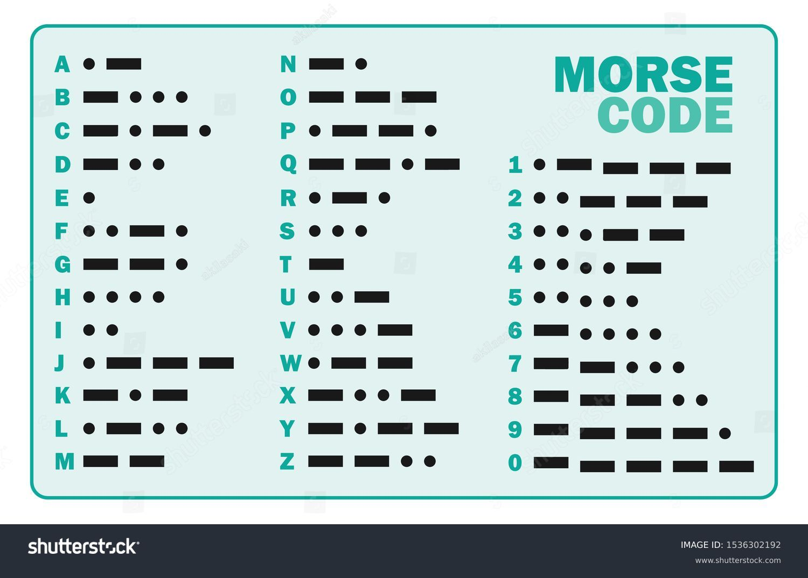

El código Morse es un sistema de codificación de caracteres alfabéticos y numéricos que utiliza secuencias de señales, generalmente en forma de pulsos eléctricos, sonidos o luces, para transmitir mensajes a través de largas distancias.
| Experiencias | Crecimiento | Aporte |
|---|---|---|
| Tener una coleccion de motos 2t | Certificarme en python | Creear una aescuela para personas de bajos recursos |
| Viajar por el mundo | Aprender idiomas | Crear un refugio animal y ayudar a los anmales de la calle |
| Tener una mansion | Hacer la ingenieria de sistemas | Crear centros de ayuda para personas discapacitadas |
Extreme Programming (XP) es una metodología ágil que mejora la calidad del software mediante prácticas como la programación en pareja, desarrollo orientado a pruebas (TDD), y entrega frecuente de software. Se enfoca en diseño simple, refactorización continua, y comunicación constante con el cliente para adaptarse rápidamente a los cambios y mantener un ritmo de trabajo sostenible.